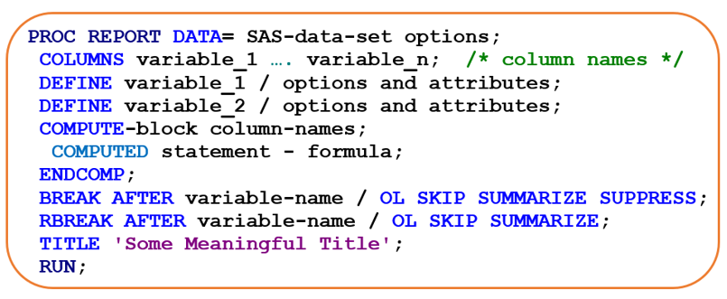
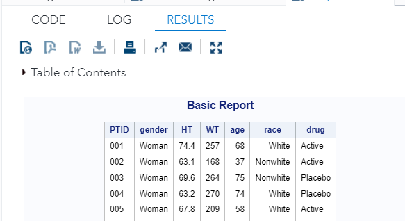
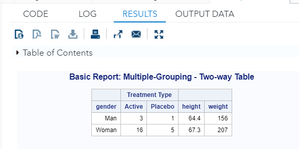
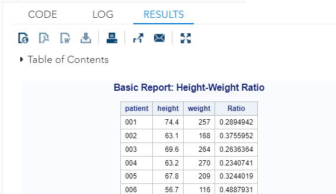
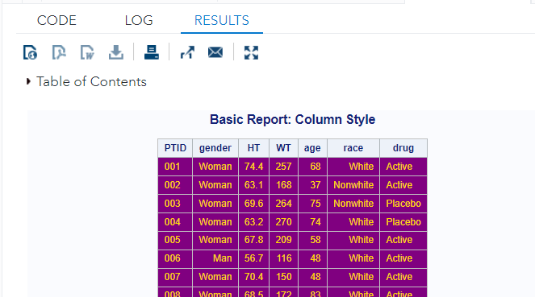
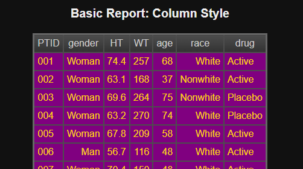

Chapter 14 Generating Analysis Reports
Drafting an analysis report is the final step for many data analyses. SAS has a very useful report procedure that allows users to generate a nice-looking profession-like report. To be more specific, PROC REPORT can do the following reporting tasks
Assigning column formats;
Defining column headings;
Specifying the order of the contents the justification, width, and spacing of the columns;
Grouping the character variables in reports;
Create statistical summaries such as subtotals, grand totals, and averages;
14.1 PROC REPORT Syntax
We first look at the report syntax.

Notice that the DEFINE statements as well as other statements in the syntax define different features of the report. The term following the ‘/’ specifies the way the REPORT procedure uses the column. Columns can be defined as:
GROUP - puts observations into categories;
DISPLAY - displays values for each observation;
ANALYSIS - contributes values to a calculation or statistic;
ORDER - defines the order of the report rows;
ACROSS - creates columns for each of its values;
COMPUTED - its values are created in a COMPUTE block;
Next, we define a working data set and use it to generate two basic reports. More reports with different types of information will be given in the last lab section.
/** Working data set and formats **/
PROC FORMAT;
VALUE gendfmt 0=' Man'
1=' Woman';
VALUE racefmt 0=' Nonwhite'
1=' White';
VALUE meanfmt low - 99 = 'white'
100 - high = 'red';
QUIT;
DATA DEMOGRAPHICS;
INPUT patient $3. gender 3. height 4.1 weight 4. age 5.1 race 3. drug $7.;
*FORMAT height age 4.1 gender gendfmt. race racefmt.;
*LABEL patient='Patient' gender='Sex' height='Height'
weight='Weight' age='Age' race='Race' drug='Drug';
DATALINES;
001 1 74.4 257 67.9 1 Active
002 1 63.1 168 36.7 0 Active
003 1 69.6 264 74.6 0 Placebo
004 1 63.2 270 73.8 1 Placebo
005 1 67.8 209 57.8 1 Active
006 0 56.7 116 47.5 1 Active
007 1 70.4 150 47.8 1 Active
008 1 68.5 172 82.6 1 Active
009 0 66.4 212 25.1 0 Active
010 1 68.1 216 60.6 1 Placebo
011 1 62.8 193 80.0 1 Active
012 1 73.6 198 77.4 1 Active
013 0 59.8 117 72.3 1 Active
014 0 74.7 179 37.4 0 Placebo
015 1 73.0 195 21.4 1 Active
016 1 57.7 213 27.3 1 Active
017 1 59.9 199 43.1 1 Active
018 1 70.2 219 67.3 0 Active
019 1 68.6 236 62.2 1 Placebo
020 1 70.7 255 66.4 1 Active
021 1 71.6 228 27.3 1 Active
022 1 58.9 111 68.3 1 Active
023 1 65.7 194 67.1 0 Active
024 1 63.2 234 65.2 0 Active
025 1 72.4 162 56.1 0 Placebo
;
RUN;
PROC PRINT DATA = DEMOGRAPHICS;
TITLE "RAW Data";
RUN;We defined several formats for those numerically encoded categorical variables so that the meaningful names will be printed out in the report. The first example did not calculate any summarized statistics. Some of the column names were relabeled to better fit the reported table.
Example 1: CROSS option ==> Two-way table and output as a SAS data set!
PROC REPORT DATA = DEMOGRAPHICS out=profit;
COLUMNS gender drug height weight;
DEFINE gender / GROUP FORMAT = gendfmt.; /* Formatting GENDER */
DEFINE drug / ACROSS 'Treatment Type'; /* Formatting DRUG */
DEFINE height / MEAN FORMAT = 4.1 WIDTH = 8;
DEFINE weight / MEAN FORMAT = 4. WIDTH = 8;
TITLE "Basic Report: Multiple-Grouping - Two-way Table";
RUN;The following is the partial output table.

Next, we generate a summarized statistics table using the same data.
Example 2 CROSS option ==> Two-way table and output as a SAS data set!
PROC REPORT DATA = DEMOGRAPHICS out=profit;
COLUMNS gender drug height weight;
DEFINE gender / GROUP FORMAT = gendfmt.; /* Formatting the variable GENDER */
DEFINE drug / ACROSS 'Treatment Type'; /* Formatting the variable DRUG */
DEFINE height / MEAN FORMAT = 4.1 WIDTH = 8;
DEFINE weight / MEAN FORMAT = 4. WIDTH = 8;
TITLE "Basic Report: Multiple-Grouping - Two-way Table";
RUN;
Example 3 Using COMPUTED statement to define new variables. There are some restrictions on using COMPUTED statement
We can only use variables to the left of the current column in the calculations (we can assign a value to a variable to the right, but we can’t read it).
Another important restriction is that unqualified columns must have usage DISPLAY. Just like the following example.
If we want to perform calculations on an analysis variable, we must qualify the name with the name of a statistic. (see Example 6).
PROC REPORT DATA = DEMOGRAPHICS;
COLUMNS Patient height weight ratio;
DEFINE patient / WIDTH =7;
DEFINE height / DISPLAY FORMAT = 4.1 WIDTH = 8;
DEFINE weight / DISPLAY WIDTH = 8;
DEFINE RATIO /COMPUTED 'Ratio';
/* starting computing */
COMPUTE RATIO;
RATIO = height/weight;
ENDCOMP; /* need to close compute */
TITLE "Basic Report: Height-Weight Ratio";
RUN;The partial output of the above report is given by

14.2 ODS Reports
PROC REPORT has some decorative options that can be used to enhance the report (headers).
NOWINDOWSsuppresses the REPORT window and directs the report to the output windowHEADLINEcreates a horizontal line between the column headers and the body of the reportHEADSKIPcreates a blank line between the column headers and the body of the reportSTYLE(Column and Header) component option is specified to instruct SAS to use the color “Blue” for the background and “White” for the foreground of each cell on the report output.We can also use the output STYLEs through ODS to create REPORTs with different ODS styles!
Example 4 Enhanced report with ODS report with WCU color in the background.
ODS HTML; /* We add colors to the table, we need a file destination
that can render the colors.
The default LISTING destination cannot render the colors
specified in the STYLE option.*/
PROC REPORT DATA = DEMOGRAPHICS
NOWINDOWS
HEADLINE
HEADSKIP
STYLE(COLUMN)=[Background=Purple
Foreground = Gold
Cellspacing = 10];
COLUMNS patient gender height weight age race drug;
DEFINE patient / DISPLAY 'PTID' WIDTH = 4; /* Rename patient as PTID,
column width = 4 */
DEFINE gender / DISPLAY FORMAT = gendfmt.; /* Formatting the variable GENDER */
DEFINE height / ANALYSIS 'HT' FORMAT = 4.1; /* */
DEFINE weight / ANALYSIS 'WT' FORMAT = 4.;
DEFINE age / DISPLAY FORMAT = 3.1;
DEFINE race / DISPLAY FORMAT = racefmt.;
DEFINE drug / DISPLAY WIDTH = 8;
TITLE "Basic Report: Column Style";
RUN;
ODS HTML CLOSE;The partial output is given by

We can also add a built-in style for the above report by simply adding a Raven style name to the output destination.
ODS LISTING CLOSE;
ODS HTML file = '/home/u50445699/My311/ReportRaven.html'
style = Raven; /* Raven style! */
PROC REPORT DATA = DEMOGRAPHICS
NOWINDOWS
HEADLINE
HEADSKIP
STYLE(COLUMN)=[Background=Purple
Foreground = Gold
Cellspacing = 10];
COLUMNS patient gender height weight age race drug;
DEFINE patient / DISPLAY 'PTID' WIDTH = 4; /* Rename patient as PTID,
column width = 4 */
DEFINE gender / DISPLAY FORMAT = gendfmt.; /* Formatting the variable GENDER */
DEFINE height / ANALYSIS 'HT' FORMAT = 4.1; /* */
DEFINE weight / ANALYSIS 'WT' FORMAT = 4.;
DEFINE age / DISPLAY FORMAT = 3.1;
DEFINE race / DISPLAY FORMAT = racefmt.;
DEFINE drug / DISPLAY WIDTH = 8;
TITLE "Basic Report: Column Style";
RUN;
ODS HTML CLOSE;
ODS LISTING;The partial ODS report is given in the following figure.

14.3 Learning Coding by Examples
This section provides a few more examples to illustrate various reports and enhancements. Since ODS reports need to a particular folder of the machine that runs the program, users need to replace the file path in the examples.
/***********************************************************************
Topics: 1. PROC REPORT: Basics
2. Enhancement of Report
3. ODS with PROC REPORT
************************************************************************/
OPTIONS PS = 74 LS = 74 NONUMBER NODATE;
DM OUTPUT 'CLEAR';
DM LOG 'CLEAR';
/** Working data set and formats **/
PROC FORMAT;
VALUE gendfmt 0=' Man'
1=' Woman';
VALUE racefmt 0=' Nonwhite'
1=' White';
VALUE meanfmt low - 99 = 'white'
100 - high = 'red';
QUIT;
DATA DEMOGRAPHICS;
INPUT patient $3. gender 3. height 4.1 weight 4. age 5.1 race 3. drug $7.;
*FORMAT height age 4.1 gender gendfmt. race racefmt.;
*LABEL patient='Patient' gender='Sex' height='Height'
weight='Weight' age='Age' race='Race' drug='Drug';
DATALINES;
001 1 74.4 257 67.9 1 Active
002 1 63.1 168 36.7 0 Active
003 1 69.6 264 74.6 0 Placebo
004 1 63.2 270 73.8 1 Placebo
005 1 67.8 209 57.8 1 Active
006 0 56.7 116 47.5 1 Active
007 1 70.4 150 47.8 1 Active
008 1 68.5 172 82.6 1 Active
009 0 66.4 212 25.1 0 Active
010 1 68.1 216 60.6 1 Placebo
011 1 62.8 193 80.0 1 Active
012 1 73.6 198 77.4 1 Active
013 0 59.8 117 72.3 1 Active
014 0 74.7 179 37.4 0 Placebo
015 1 73.0 195 21.4 1 Active
016 1 57.7 213 27.3 1 Active
017 1 59.9 199 43.1 1 Active
018 1 70.2 219 67.3 0 Active
019 1 68.6 236 62.2 1 Placebo
020 1 70.7 255 66.4 1 Active
021 1 71.6 228 27.3 1 Active
022 1 58.9 111 68.3 1 Active
023 1 65.7 194 67.1 0 Active
024 1 63.2 234 65.2 0 Active
025 1 72.4 162 56.1 0 Placebo
;
RUN;
PROC PRINT DATA = DEMOGRAPHICS;
TITLE "RAW Data";
RUN;
/************************************************************************/
/*** Topic 1 - Basic List Report - DEFINE Statement and Options ***/
/************************************************************************/
/***
The term following the '/' specifies the way the REPORT procedure uses the
column. Columns can be defined as:
1. GROUP - puts observations into categories
2. DISPLAY - displays values for each observation
3. ANALYSIS - contributes values to a calculation or statistic
4. ORDER - defines the order of the report rows
5. ACROSS - creates columns for each of its values
6. COMPUTED - its values are created in a COMPUTE block.
***/
** Example 1: Dropping three variables: AGE, RACE, and DRUG;
(1). Attach a statistic such as SUM, MEANS, SUMMARY,
UNIVARIATE, etc. to a variable or more variables.
(2). One cannot see the effect of individual value.
Once a group variable is jointly used with the
requested statistic, we will see the descriptive
statistics clearly. We include Patient ID in the report,
we cannot see the effect of summary statistics!!
**/
PROC REPORT DATA = DEMOGRAPHICS;
COLUMNS patient gender (height weight),MEAN;
DEFINE patient / DISPLAY 'PTID' WIDTH = 4; /* Rename patient as PTID,
column width = 4 */
DEFINE gender / GROUP FORMAT = gendfmt.; /* Formatting the variable GENDER */
DEFINE height / DISPLAY FORMAT = 4.1 WIDTH = 8;
DEFINE weight / DISPLAY FORMAT = 4. WIDTH = 8;
TITLE "Basic Report: Single summary statistics - MEAN";
RUN;
/** Example 2: Drop Patient ID and use the group option!
We now can see the summarized statistics!
**/
PROC REPORT DATA = DEMOGRAPHICS OUT = mysummaryStats;
COLUMNS gender (height weight),MEAN;
DEFINE gender / GROUP FORMAT = gendfmt.; /* Formatting GENDER */
DEFINE height / DISPLAY FORMAT = 4.1 WIDTH = 8;
DEFINE weight / DISPLAY FORMAT = 4. WIDTH = 8;
TITLE "Basic Report: Group MEANs";
RUN;
/** Example 3: Multi-grouping: still one-way table!! **/
PROC REPORT DATA = DEMOGRAPHICS;
COLUMNS gender drug (height weight),MEAN;
DEFINE gender / GROUP FORMAT = gendfmt.; /* Formatting the variable GENDER */
DEFINE drug / GROUP; /* Formatting the variable DRUG */
DEFINE height / DISPLAY FORMAT = 4.1 WIDTH = 8;
DEFINE weight / DISPLAY FORMAT = 4. WIDTH = 8;
TITLE "Basic Report: Multi-Grouping - One Ways Table";
RUN;
/** Example 4: multiple descriptive statistics: **/
PROC REPORT DATA = DEMOGRAPHICS;
COLUMNS gender (height weight),(N mean STD);
DEFINE gender / GROUP FORMAT = gendfmt.; /* Formatting the variable GENDER */
DEFINE height / ANALYSIS FORMAT = 4.1 WIDTH = 8;
DEFINE weight / ANALYSIS FORMAT = 4. WIDTH = 8;
TITLE "Basic Report: Multiple Summary Statistics";
RUN;
/** Example 5: Alternative method of quantification! **/
PROC REPORT DATA = DEMOGRAPHICS;
COLUMNS Patient height weight ratio;
DEFINE patient / WIDTH =7;
DEFINE height / ANALYSIS FORMAT = 4.1 WIDTH = 8;
DEFINE weight / ANALYSIS FORMAT = 4.0 WIDTH = 8;
DEFINE RATIO /COMPUTED 'Ratio';
COMPUTE RATIO;
/* The sum of individual observation is itself! */
/* height.SUM: The extension is required! */
/* height /weight ==> produce error!! */
RATIO = height.SUM/weight.SUM;
ENDCOMP;
TITLE "Basic Report: Height-Weight Ratio";
RUN;
/********************************************************************/
/*** Topic 2 - Enhancing the Appearance of PROC REPORT Output ***/
/********************************************************************/
/** Example 1 **/
/** Modify the default column header **/
PROC REPORT DATA = DEMOGRAPHICS
NOWINDOWS
HEADLINE
HEADSKIP;
COLUMNS patient gender height weight age race drug;
DEFINE patient / DISPLAY 'PTID' WIDTH = 4; /* Rename patient as PTID,
column width = 4 */
DEFINE gender / DISPLAY FORMAT = gendfmt.; /* Formatting GENDER */
DEFINE height / ANALYSIS 'HT' FORMAT = 4.1; /* */
DEFINE weight / ANALYSIS 'WT' FORMAT = 4.;
DEFINE age / DISPLAY FORMAT = 3.1;
DEFINE race / DISPLAY FORMAT = racefmt.;
DEFINE drug / DISPLAY WIDTH = 8;
TITLE "Basic Report: Column Header Modification";
RUN;
/** Example 3: Conditional output **/
ODS HTML; /* We add colors to the table, we need a file destination
that can render the colors.
The default LISTING destination cannot render the colors
specified in the STYLE option.*/
PROC REPORT DATA = DEMOGRAPHICS
NOWINDOWS
HEADLINE
HEADSKIP
STYLE(Header)=[Background=White
Cellspacing=0
Bordercolor=Blue
Borderwidth=2
Rules=rows
Frame=box]
STYLE(COLUMN)=[Background=Purple
Foreground = Gold
Cellspacing = 10];
COLUMNS Patient height weight drug ratio;
DEFINE patient / WIDTH =7;
DEFINE height / ANALYSIS FORMAT = 4.1 WIDTH = 8;
DEFINE weight / ANALYSIS FORMAT = 4.0 WIDTH = 8;
DEFINE RATIO /COMPUTED 'Ratio';
COMPUTE RATIO;
IF UPCASE(drug)="ACTIVE" THEN
/* The sum of individual observation is itself! */
/* height.SUM: The extension is required! */
/* height /weight ==> produce error!! */
RATIO = height.SUM/weight.SUM;
ENDCOMP;
TITLE " STYLE(Hearder)+ Conditional Logic ";
RUN;
ODS HTML CLOSE;
/***************************************************************/
/*** Topic 3: The ODS Destination and Exporting Report ***/
/***************************************************************/
/** Available output STYLES are available in SAS and can be found by
running the following PROCedure **/
PROC TEMPLATE ;
LIST STYLES ;
RUN;
/** Example 1: ODS Styles **/
ODS LISTING CLOSE;
ODS HTML file = 'C:\STA311\w13\Reportmeadow.html'
style = meadow;
PROC REPORT DATA = DEMOGRAPHICS
NOWINDOWS
HEADLINE
HEADSKIP
STYLE(COLUMN)=[Background=Purple
Foreground = Gold
Cellspacing = 10];
COLUMNS patient gender height weight age race drug;
DEFINE patient / DISPLAY 'PTID' WIDTH = 4; /* Rename patient as PTID,
column width = 4 */
DEFINE gender / DISPLAY FORMAT = gendfmt.; /* Formatting GENDER */
DEFINE height / ANALYSIS 'HT' FORMAT = 4.1; /* */
DEFINE weight / ANALYSIS 'WT' FORMAT = 4.;
DEFINE age / DISPLAY FORMAT = 3.1;
DEFINE race / DISPLAY FORMAT = racefmt.;
DEFINE drug / DISPLAY WIDTH = 8;
TITLE "Basic Report: Column Style";
RUN;
ODS HTML CLOSE;
ODS LISTING;
/** Example 2 **/
/** MACRO for presenting different STYLES **/
%MACRO ODSSTYLE(STYLE = );
ODS HTML
FILE ="C:\STA311\w13\REPORT&STYLE..HTML"
STYLE =&STYLE;
PROC REPORT DATA = DEMOGRAPHICS
NOWINDOWS
HEADLINE
HEADSKIP
STYLE(Header)=[Background=White
Cellspacing=0
Bordercolor=Blue
Borderwidth=2
Rules=rows
Frame=box] ;
COLUMNS Patient height weight drug ratio;
DEFINE patient / WIDTH =7;
DEFINE height / ANALYSIS FORMAT = 4.1 WIDTH = 8;
DEFINE weight / ANALYSIS FORMAT = 4.0 WIDTH = 8;
DEFINE RATIO /COMPUTED 'Ratio';
COMPUTE RATIO;
IF UPCASE(drug)="ACTIVE" THEN
/* The sum of individual observation is itself! */
/* height.SUM: The extension is required! */
/* height /weight ==> produce error!! */
RATIO = height.SUM/weight.SUM;
ENDCOMP;
TITLE " STYLE(Header)+ Conditional Logic ";
RUN;
ODS HTML CLOSE; /* ODS must be closed! */
%MEND;
%ODSSTYLE(STYLE=HARVEST);
%ODSSTYLE(STYLE=Ocean);
%ODSSTYLE(STYLE=MeadowPrinter);
%ODSSTYLE(STYLE=PowerPointDark);
%ODSSTYLE(STYLE=Excel);
%ODSSTYLE(STYLE=BlockPrint);
%ODSSTYLE(STYLE=BarrettsBlue);
%ODSSTYLE(STYLE=EGDefault);